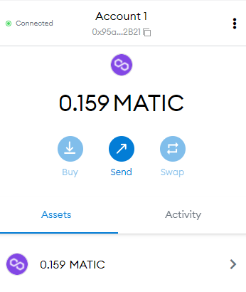
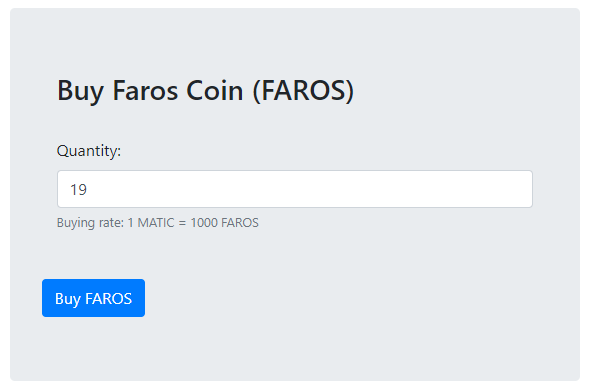
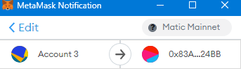
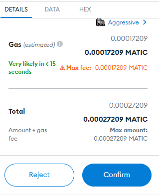
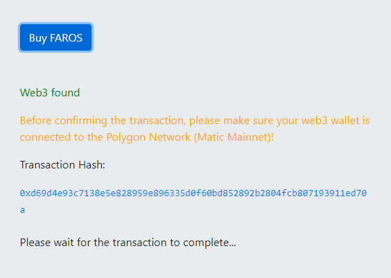
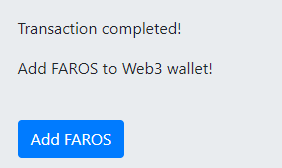
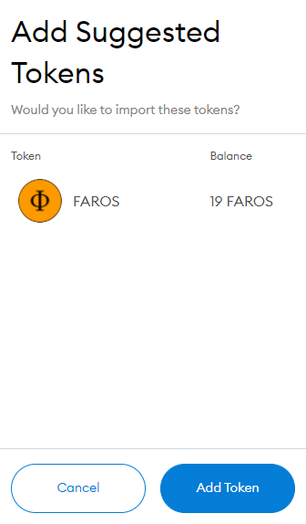
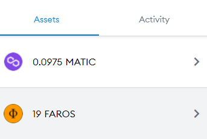

1. Install Web3 wallet like MetaMask
https://metamask.io/2. Add Polygon Network to MetaMask
https://docs.polygon.technology/docs/develop/metamask/config-polygon-on-metamask/3. Deposit MATIC tokens to your MetaMask account (You can buy MATIC tokens on centralized exchanges e.g. binance, coinbase)
4. At the Faros Coin homepage, enter the Quantity of FAROS tokens you want to purchase and click Buy FAROS
5. Make sure that your MetaMask wallet is connected to the Polygon Network (Matic Mainnet)
6. Confirm the transaction in MetaMask
7. Wait for the transaction to complete
8. After the transaction has completed, add FAROS token to MetaMask wallet by clicking Add FAROS
9. Confirm the operation in MetaMask by clicking Add Token
10. Inside MetaMask go to Assets and your FAROS tokens should be visible
